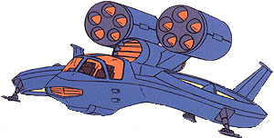

| Fanfan |
|
|  | |
General and Technical Data |
|
|
Unit type: light attack hovercraft Armament: 2 x 5-tube missile launcher, 4x 9mm vulcan |
|
| Technical and Historical Notes | |
|
Though it looks more like a civilian touring craft, the FanFan is, indeed, a military unit.
As its name may suggest, the FanFan is propelled by a pair of VTOL turbines on its wings, and is one of the few Federation aircraft capable of vertical takeoff. It is also nimble and quite maneuverable for such a piddly craft. However, that's about the sum of its good attributes. The FanFan is practically unarmored, making it extremely easy to be downed by enemy fire. Furthermore, the total extent of its anti-armor armament is a pair of smallish five-tube missile launchers, which have the boon of giving it very little firepower. It is also armed with 4 small, 9mm vulcans, but these are intended for anti-personell use. Obviously, the FanFan is not intended as a frontline attack aircraft. However, they do have a few decent uses. Due to their low fuel consumption, FanFans can stay in the air for extended periods of time, making them ideal to act as forward lookouts at friendly bases, as well as to provide an "eye in the sky" of sorts to protect against possible enemy incursion that sneaks by conventional detection means. |
 RPG quick stats sheet
RPG quick stats sheet